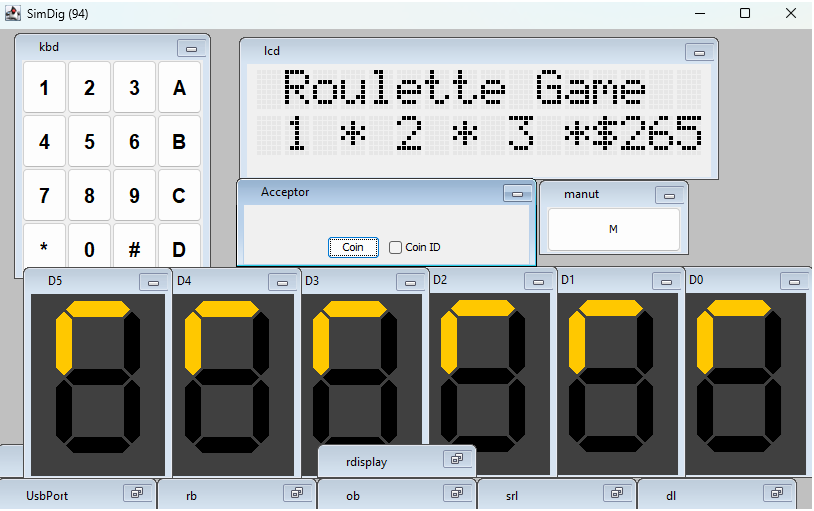

Completed Projects


Roullete Game
Hardware/Software split: game implemented in Kotlin, with VHDL on an FPGA handling keypad input and display output.
Tools: Kotlin, VHDL
View on GitHubFoccacia-webApi
Full-stack project: a backend service orchestrating calls to a football API and a web interface to search and view results.
Tools: JavaScript, HTML, CSS, REST API, ElasticSearch, Node.js
View on GitHub
Paddle Courts Manager
Layered architecture (responsive frontend + REST API + relational DB) supporting CRUD for clubs/courts/users, free-slot checks and booking records.
Tools: Kotlin, JavaScript, HTML, CSS, PostgreSQL, Express, http4k
View on GitHub